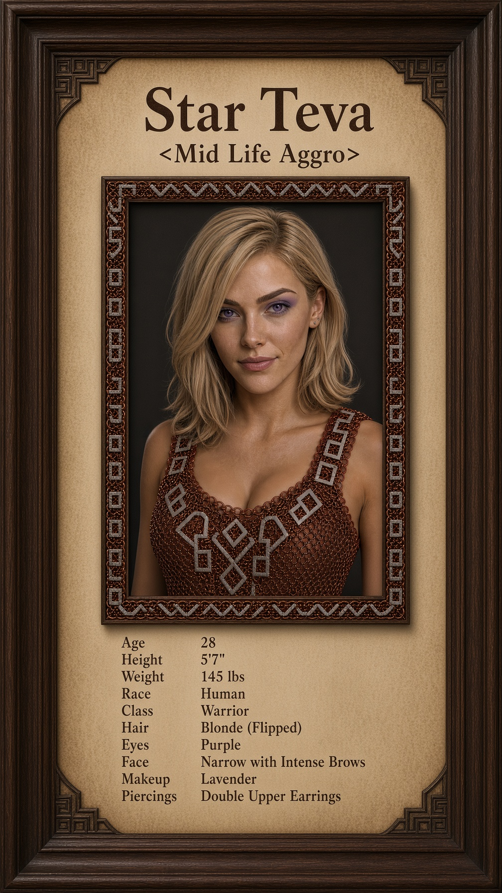
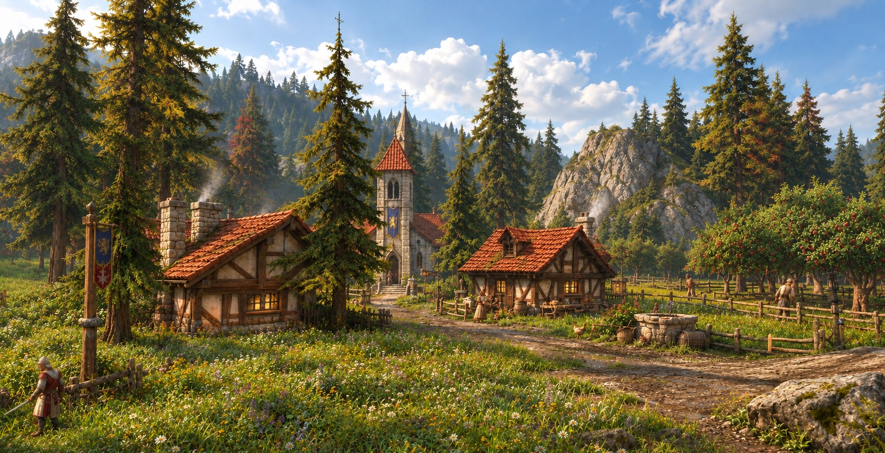
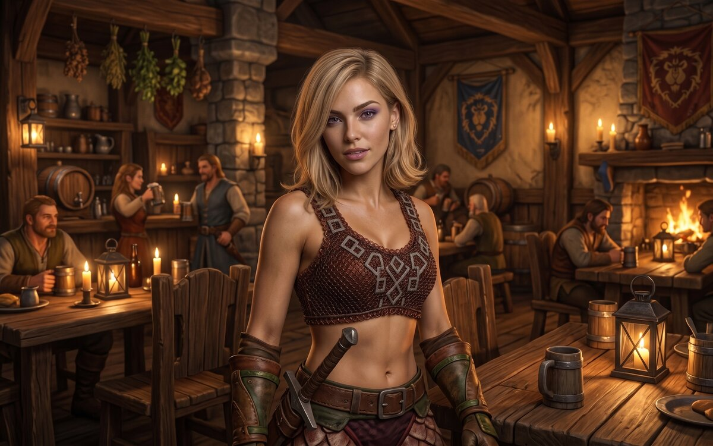

Raised in a quiet farming and milling settlement in the Hillsbrad Foothills she still simply calls “the mill.” Fought in the defense of the mill and escaped south through Southshore in Year 24, then answered the call for help at Northshire. Carries an old iron two-handed sword and wears the chain mail she has been able to keep in service.
Star Teva is 28. She was born and raised in a quiet human farming and milling settlement in the Hillsbrad Foothills that she still simply calls “the mill.” She never uses the name the place carries now. To her it was always just home—grain fields, the old mill wheel, a handful of families, and the road that ran south toward Southshore.

In Year 24 ADP, as the Forsaken took Tarren Mill, Star fought to defend her home. The settlement could not hold, and she escaped with what she could carry. She moved south through Southshore while it was still a human town, then continued to Stormwind. She was about twenty-seven. The old iron two-handed sword she still uses came with her from the mill; the veteran who gave it to her did not make it out.
After she reached Stormwind she did not stay in the city long. When word went out that Northshire needed people willing to help clear the area and protect the farms and the Abbey road, she answered. The chain mail she wears is what she has been able to keep in service since those early days. The purple eyes, flipped blonde hair, intense brows, narrow face, double upper earrings, and lavender makeup are the same as always—small, deliberate choices she kept even while everything else changed.
She does not speak often about the mill or the road through Southshore. When she does, she keeps it short and practical: the place she left is no longer what it was, the people who stayed did not all make it out, and the only thing she still carries from that life is the sword and the habit of checking on whoever is standing beside her when a fight ends. At 28 she is still learning how to be a warrior rather than simply someone who survived long enough to keep swinging. Progress over perfection—one repaired strap, one cleared road, and one step farther from the mill than she was the day before.

Goldshire Inn
| Name | Star Teva |
|---|---|
| Race | Human |
| Class | Warrior |
| Age | 28 (year 25) |
| Height | 5'7" |
| Weight | 145 lbs |
| Eyes | Purple. In-game: Eye Color 16 |
| Hair | Blonde, flipped. In-game: Hair Style Flipped 6, Hair Color 7 |
| Face | Narrow, intense brows. In-game: Face 3, Face Shape Narrow 1, Eyebrows Intense 25, Skin Color Caucasian 3 |
| Piercings | Double Upper Earrings 4 |
| Makeup | Lavender 3 |
| Background | The mill, Hillsbrad Foothills. Escaped through Southshore. Answered the call at Northshire. |
| Weapon | Old iron two-handed sword from the mill. |
Skin Color: Caucasian 3
Face: 3
Hair Style: Flipped 6
Hair Color: Blonde 7
Eye Color: Purple 16
Eyebrows: Intense 25
Face Shape: Narrow 1
Piercings: Double Upper Earrings 4
Makeup: Lavender 3
Currently: Traveling and taking work where she can find it. Still learning the warrior’s path. Keeps her old iron sword close and checks on whoever stands beside her when a fight ends.
Description: A human woman of about 28, standing 5 feet 7 inches tall, with a narrow face, intense brows, and striking purple eyes. Her blonde hair is worn in a flipped style; light lavender makeup and double upper earrings are deliberate touches. She wears serviceable chain mail and carries a plain two-handed iron sword. Her serious expression can soften readily in good company.
Glance 1 — Old iron sword: A plain, well-kept two-handed iron sword rides close at hand. Its age shows, but she maintains it.
Glance 2 — Serviceable chain mail: Her chain mail is worn but kept in working order, with straps and fittings she tends as needed.
Glance 3 — A striking gaze: Purple eyes, intense brows, and a narrow face give her a serious look. Lavender makeup and double upper earrings add a more personal touch.
Glance 4 — Practical gear: Her equipment is practical and tended. She notices a loose strap or a burden that needs shifting and is willing to lend a hand.
Glance 5 — Beside her: After a fight she checks on whoever was standing nearby, looking for injuries or a need for help.
Personality: Steady, practical, and quietly determined. She listens before joining a conversation, respects people who do their share, and shows care through action. With familiar company she is friendly and dryly funny. Proud of her progress, she is also willing to learn from more experienced fighters.
Motto: “Progress over perfection.”
Notes:
First name: Star. Last name: Teva. Title: none specified. Full title: Star Teva. Race: Human. Class: Warrior. Age: 28 in Year 25. Height: 5′7″. Weight: 145 lbs. Eyes: purple. Hair: blonde, flipped. Face: narrow with intense brows. Piercings: double upper earrings. Makeup: light lavender.
Star Teva grew up among the farming and milling families of Tarren Mill in the Hillsbrad Foothills. She fought in its defense and escaped through Southshore in Year 24, carrying the old iron two-handed sword a veteran had given her. The veteran did not make it out. After reaching Stormwind, she answered the call for help at Northshire. Now she takes work where she can find it, keeps her chain mail serviceable, and continues to learn the warrior’s path. She does not often speak of the mill, but remembers it as home.
Human warrior, age 28 in Year 25. Star is a Tarren Mill survivor and an aspiring fighter, not a master swordswoman. Her Year 24 defense and escape are her character’s story; the year of the Forsaken takeover is a roleplay assumption rather than a confirmed lore date. Open to practical work, training, travel, shared meals, and conversations about home when trust develops.
1. This image is an AI enhanced picture of the original copyrighted to Blizzard Entertainment Inc. Blizzard Entertainment Inc. grants "a personal, non-exclusive, non-transferable and non- assignable license to use and display, for home, noncommercial and personal use only, one copy of any material and/or software that you may download from [their] site, including, but not limited to, any files, codes, audio or images incorporated in or generated by the software (collectively the "Downloaded Content") provided, however, that you must include or maintain all copyright and other notices contained or associated with such Downloaded Content." ↩
2. The exact year Tarren Mill fell to the Forsaken is not established in the consulted sources. For Star’s story, its fall and her escape are placed in Year 24, when she was about 27. This is a roleplay assumption, not a confirmed lore date. The earlier Scourge attack depicted in The Sunwell Trilogy is a separate event. See Tarren Mill history and the Battle for Hillsbrad. ↩